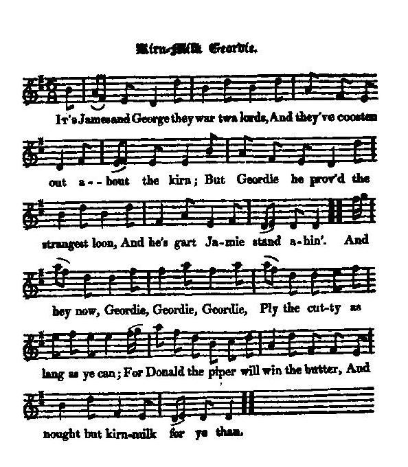

Kirn-Milk Geordie
L'homme au petit-lait
King George I.
Tune - Melodie"Kirn-Milk Geordie"
from Hogg's "Jacobite Reliques" part I, N° 58
Sequenced by Christian Souchon

|
To the tune:
"The song is popular, and would likely have been more so, had the tune been good, which is rather indifferent and common-place. In general there wont only to be two verses of it sung." Hogg in "Jacobite Relics", 1819 |
A propos de la mélodie:
"La chanson est populaire et le serait encore d'avantage si la mélodie n'était pas aussi quelconque. En général on ne chante que deux couplets de ce morceau." Hogg in "Jacobite Relics", 1819 |

|
KIRN-MILK GEORDIE
1. It's James and George they war twa lords, And they've coosten out about the kirn; But Geordie he prov'd the strangest loon, And he gart Jamie stand ahind. And hey now Geordie, Geordie, Geordie, Ply the cutty as lang as ye can; For Donald the piper will win the butter, And nought but kirn-milk for ye than. 2. And aye he suppit, and aye he swat, And aye he ga'e the tither a girn, And aye he fykit, and aye he grat, When Donald the piper ca'd round the kirn. And up wi' Geordie, kirn-milk Geordie, He is the king-thief o' them a'; He steal'd the key, and hautit the kirn, And siccan a feast he never saw. 3. He kicked the butler, hanged the groom, And turn'd the true men out o' the ha'; And Jockie and Sawney were like to greet, To see their backs set at the wa'. And up wi' Geordie, kirn-milk Geordie, He has drucken the maltman's ale; But he'll be nickit ahint the wicket, And tuggit ahint his gray mare's tail. [1] 4. Young Jamie has rais'd the aumry cook, And Jockie has sworn by lippie and law, Douce Sawney the herd has drawn the sword, And Donald the piper, the warst of a'. And down wi' Geordie, kirn-milk Geordie; He maun hame but stocking or shoe, To nump his neeps, his sybows, and leeks, And a wee bit bacon to help the broo. [2] 5. The cat has clomb to the eagle's nest, And suckit the eggs, and scar'd the dame; The lordly lair is daubed wi' hair; But the thief maun strap, and the hawk come hame. Then up wi' Geordie, kirn-milk Geordie, Up wi' Geordie high in a tow: At the last kick of a foreign foot, We'se a' be ranting roaring fou. Source: "The Jacobite Relics of Scotland, being the Songs, Airs and Legends of the Adherents to the House of Stuart" collected by James Hogg, published in Edinburgh by William Blackwood in 1819. |
L'HOMME AU PETIT-LAIT
1. Un jour Jacques et Georges, deux seigneurs Se disputaient fort pour une baratte. A ce jeu Geordie fut le vainqueur C'est Jamie qui dut battre en retraite. Mais prend bien garde Geordie, Geordie, Geordie Si loin que tu peux, le bras il faut tendre: Autrement, Donald le sonneur aura le beurre Au petit lait seul tu peux prétendre. 2. Voyez comme il saute et comme il sue, Voyez comme à l'autre il fait la grimace Et comme il trépigne et pleure et rue Quand Donald vient près de la baratte. Vive l'homme au petit-lait, Geordie, Geordie! C'est le roi de tous les larrons en foire Il a volé la clé, la baratte est à lui La belle occasion! Il n'ose y croire. 3. Il frappe le majordome, il pend Le palefrenier, chasse l'équipage. A Jockie et Sawney maintenant: Le dos au mur, ils sont tout en nage. Vive l'homme au petit-lait, Geordie, Geordie! Lui qui du brasseur a lampé la bière; Mais voilà qu'on va l'enfermer dans l'écurie, Sa jument devant et lui derrière. [1] 4. Jacques a relevé le maître-queux, Jock prêté serment la main sur la bible, Sawney le berger pris son épieu, C'est Donald qui fut le plus horrible. A bas l'homme au petit-lait, Geordie, Geordie! Il rentre chez lui sans souliers, ni chausses Planter ses navets, ses oignons et ses radis, Et du lard pour relever la sauce. [2] 5. Dans l'aire de l'aigle un chat grimpa, A gobé les œufs, fait peur à la dame. Le royal nid est souillé de poils Mais l'aigle viendra punir l'infâme. Pendez l'homme au petit-lait, Geordie, Geordie Pour pendre Geordie qu'on cherche une corde! Et le dernier coup de pied au cul du bandit C'est notre chanson, hurlante horde! (Trad. Christian Souchon(c)2010) |
|
[1]
Donald, Jockie, Sawney...
: "This is an uncommonly clever and shrewd old song, possesses much liveliness and humour, and the allegory, though rather too easily unriddled, has the same sly appropriation with the rest. It is evident, that by " Donald the piper" is represented the Highland clans. " Jockie" is John Bull, or the English ; and " douce Sawney" is the Scots Lowlanders. Who is meant by " the aumry cook" I have not been able to discover ; but it is likely to have been some of King George's household, whom they had supposed favoured the exiled family."
[2] A wee bit bacon : " Then down wi' Geordie, kirn-milk Geordie ! He maun hame but stocking or shoe, To nump his neeps, his sybows and leeks, And a wee bit bacon to help the broo, is such a picture of the pinching poverty of a German potentate as is not to be met with in as few words, while, at the same time, the humour is heightened by the sly allusion to the enormous favourite in the " wee bit bacon." Hogg in "Jacobite Relics", 1819 |
[1]
Donald, Jockie, Sawney...
: "Voilà un vieux chant plein d'astuce et de sous-entendus qui pétille d'humour et l'allégorie qu'il présente, bien qu'aisément déchiffrable, ne dépare pas le reste. Il est évident que "Donald le sonneur" représente les clans, que "Jockie" est John Bull, l'Anglais et que Sawney (Alexandre) est le Lowlander. Je n'arrive pas à savoir à qui le "cuisinier" fait allusion; sans doute quelque familier du roi Georges que l'on supposait favorable au monarque exilé."
[2] du lard : "A bas l'homme au petit-lait, Geordie, Geordie Il rentre chez lui sans souliers, ni chausses Planter ses navets, ses oignons et ses radis, Et du lard pour relever la sauce. est une astucieuse description, remarquablement laconique de l'indigence criante du potentat allemand, rehaussée par une allusion assassine à l' énorme favorite que désigne le "lard". Hogg dans "Jacobite Relics", 1819 |
|
|
|